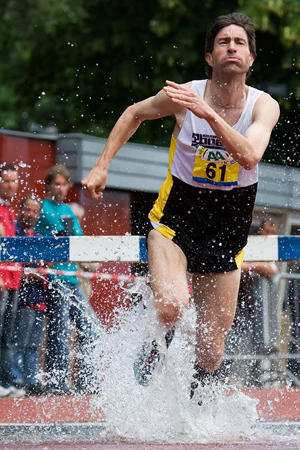
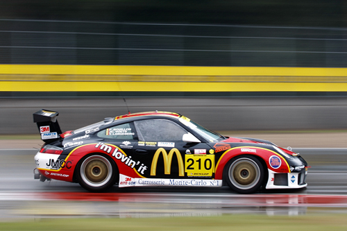

Sport fotografie
Bij sportfotografie draait het vaak om de bevriezing van het moment en kiezen we daarom vaak voor hoge sluitertijden. Helaas is het niet altijd even licht en daarom is het verstandig om met de iso-instelling van je camera vaak wat hoger te zitten dan normaal. Ook is het verstandig om bij sportfotografie de zgn. ´burstmodus´ van je camera te gebruiken om op die manier verschillende beelden per seconde te maken. De kans om een belangrijk moment te missen wordt dan aanzienlijk kleiner.
Apparatuur
Natuurlijk is het lekker om met de beste camera's en de grootste objectieven te kunnen werken. Maar is het ook nodig? Nee, in eerste instantie niet. Je kunt met relatief goedkopere spullen ook al uit de voeten. Later zou je gaandeweg je apparatuur uit kunnen breiden met bijvoorbeeld objectieven die het mogelijk maken om met diafragma f/2.8 te werken. Het belangrijkste is dat je de apparatuur die je hebt, door en door kent. Op die manier weet je wat de beperkingen zijn en weet je of je bijvoorbeeld wel of niet in de zaal vooruit kunt.
Voorbereiding
Bereid je voor als je voor het eerst naar een evenement gaat. Kijk wat de tijden zijn, maar bekijk ook of je misschien al een plattegrondje kunt krijgen (altijd handig om bij te hebben namelijk). Probeer het een en ander van de sport te achterhalen. Vaak kan het helpzaam zijn om zo te bepalen wat de belangrijke (en dus te fotograferen) momenten van de sport zijn.
Wanneer je naar een sportevenement toegaat, zorg dan dat je ook op tijd aanwezig bent. Je hebt dan alle tijd om rustig een goede plek uit te zoeken. Die zijn er vaak namelijk niet in overvloed. Zorg niet dat je op één plek blijft staan, want dan worden je foto's ook te eentonig. Let erop dat je op een locatie staat/zit/ligt/hangt waar je geen hinder hebt van mensen die door je beeld heen lopen. Dit zal later namelijk gaan gebeuren, net op voor jou het belangrijkste moment. Op tijd komen heeft ook het voordeel dat je nog eens rustig alles kunt overdenken en je instellingen na kunt kijken. Ook kun je op je gemak kijken of de kadering van je beeld goed is. Wanneer het evenement is begonnen, dan kunnen de dingen erg snel gaan en dan heb je misschien wel niet meer de tijd om nog eens rustig na te denken over een groothoekobjectief, of een teleobjectief.
Een ander, maar niet onbelangrijk voordeel, van op tijd komen, is ook de kans om bij een goede plek vooraan te staan is groter. Wanneer er snelheid in het spel is, wordt het vaak wat anders. De techniek van het 'pannen' zorgt ervoor dat het gevoel van snelheid ook in de foto blijft. Dit hoeft niet alleen bij raceauto's, maar kan ook bij wielrennen of hardlopers. Door het meebewegen van je camera met het onderwerp en door de keuze van een relatief langzame sluitertijd raakt je achtergrond bewogen terwijl je onderwerp scherp blijft.
Belangrijk is om de camera tijdens het 'pannen' verticaal niet te laten bewegen. Het is een techniek die enige oefening vraagt en in het begin zullen veel van je beelden mislukt zijn. Maar het is niet te moeilijk en als je het een beetje onder de knie krijgt kun je gaan zakken met sluitertijden. Sluitertijden van 1/15 zijn dus ook niet ondenkbaar. Maar 1/125 of 1/180 is misschien een beter begin. Het is verstandig om vooraf na te denken of het slim is om te flitsen. Ook overdag. Sporters kunnen last hebben van je flits of het kan dat de sporter te ver weg is waardoor je flitslicht de sporter niet eens haalt.In de zaal is het in de regel verboden in Nederland. Bij het voetbal is het tijdens de wedstrijden in het betaald voetbal ook verboden. Wanneer je twijfelt, vraag het van te voren. Je was er immers toch al op tijd.